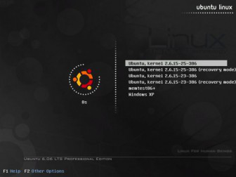

Как восстановить GRUB?
Если кто не знает, то GRUB - это загрузчик Linux, если ещё проще, то это меню операционных систем, или варианты загрузки, которые вы видите после загрузки BIOS. Если загрузчик повредился или затёрся, то операционная система не загрузится.
Обычно такое происходит, когда вы после Linux ставите параллельно ещё и Windows. Глупая, а может просто злая Windows не любит конкурентов, поэтому чужие загрузчики затирает.
Если ставить сначала Windows, а потом только Linux, то всё будет нормально, загрузчик GRUB сохранит загрузчик Windows и включит его даже в своё меню. Но это идеально.

Если у вас всё было так, то при крушении Windows и её последующей перестановке происходит описанная выше ситуация и требуется восстановить grub загрузчик.
Как восстановить GRUB?
Для того, чтобы восстановить загрузчик GRUB, нужно загрузить Linux с флешки или с CD-DVD. Лично я держу эту инструкцию в распечатанном на бумаге виде, чтобы потом не искать её в интернет, да и интернета может под рукой не быть. Что и вам советую. После того, как вы загрузились в флешки или CD-DVD, вам нужно открыть терминал, ведь именно в нём мы будем "колдовать".
Шаг 1. Определяемся, на каком из жестких дисков стоит наш линукс и какое буквенное обозначение он имеет. Для этого выполняем команду:
sudo fdisk -l
Шаг 2. Монтируем наш диск в систему. Для этого выполняем команду:
sudo mount /dev/sdXY /mnt
Тут нужно немного пояснить. X - это диск в системе, например sda, sdb и так далее. Y - это номер диска, например 1, 2 и так далее. Выгдядеть команда поэтому будет примерно так:
sudo mount /dev/sda1 /mnt
Но это лишь пример, у вас будут свои буквы и цифры.
Шаг 3. И последний шаг - это восстановление GRUB. Для того, чтобы восстановить GRUB выполним команду:
sudo grub-install --root-directory=/mnt/ /dev/sdX
Опять же X - это ваша буква диска. После этого нужно пере загрузиться, например, такой командой:
sudo reboot
Всё, если вы ничего не перепутали и восстановить grub вам удалось, то вы увидите меню с выбором операционных систем. Всё, как всего, достаточно просто!